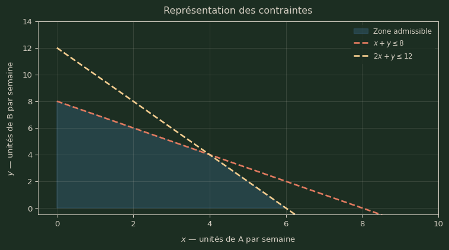

Séance de révisions 2
Cette séance propose un nouveau cas intégrateur couvrant les modules 1 à 5 : dérivation bivariée, élasticités partielles, optimisation et programmation linéaire.
Énoncé
Un hôtel souhaite optimiser sa politique tarifaire. On note :
- \(p\) : tarif par nuit (EUR)
- \(s\) : investissement mensuel en qualité de service (EUR × 1 000)
On admet les modélisations suivantes :
- le nombre de nuits vendues par mois est défini par :
\[ n(p,s)=100-2p+s, \quad p\ge 0,\; s\ge 0,\; n(p,s)\ge 0 \]
- Le coût total mensuel (en EUR) est modélisé par :
\[ C(p,s)=20\,n(p,s)+\frac{s^2}{2} \]
- Le profit mensuel (en EUR) est modélisé par :
\[ \pi(p,s)=p\,n(p,s)-C(p,s) \]
Partie 1 - Optimisation du profit tarifaire
1. Calculer les dérivées partielles premières de la demande.
On dérive \(n(p,s)=100-2p+s\) par rapport à chaque variable en traitant l’autre comme une constante.
Par rapport à \(p\) : les termes \(100\) et \(s\) sont constants vis-à-vis de \(p\), seul \(-2p\) contribue :
\[ n_p = \frac{\partial}{\partial p}(100-2p+s) = -2 \]
Par rapport à \(s\) : les termes \(100\) et \(-2p\) sont constants, et \(\frac{\partial}{\partial s}(s) = 1\) :
\[ n_s = \frac{\partial}{\partial s}(100-2p+s) = 1 \]
Interprétation : une hausse de tarif réduit le nombre de nuits vendues ; un investissement en qualité l’augmente proportionnellement.
2. Calculer les élasticités partielles de la demande.
L’élasticité partielle d’une fonction \(f(x,y)\) par rapport à \(x\) est \(E_x = f_x \cdot \frac{x}{f}\). On applique cette formule à \(n\) avec les dérivées calculées à la question précédente.
Élasticité-prix : on substitue \(n_p = -2\) et \(n = 100-2p+s\) :
\[ E_p=n_p\cdot\frac{p}{n} = -2 \cdot \frac{p}{100-2p+s} =\frac{-2p}{100-2p+s}<0 \]
Le signe négatif traduit la loi de la demande : une hausse de tarif réduit l’occupation.
Élasticité-qualité : on substitue \(n_s = 1\) :
\[ E_s=n_s\cdot\frac{s}{n} = 1 \cdot \frac{s}{100-2p+s} =\frac{s}{100-2p+s}>0 \]
Le signe positif confirme que la qualité est un levier de croissance du taux d’occupation.
3. Calculer les dérivées partielles premières du profit.
On simplifie d’abord \(\pi\) pour faciliter la dérivation. En substituant \(C = 20n + \frac{s^2}{2}\) :
\[ \pi = pn - C = pn - 20n - \frac{s^2}{2} = (p-20)n - \frac{s^2}{2} \]
Dérivée par rapport à \(p\) : on applique la règle du produit à \((p-20)n(p,s)\). Ici \(s\) est constant donc \(\frac{\partial}{\partial p}\!\left(\frac{s^2}{2}\right) = 0\) :
\[ \pi_p = \frac{\partial}{\partial p}\bigl[(p-20)n\bigr] = \underbrace{1}_{(p-20)'} \cdot n + (p-20) \cdot \underbrace{n_p}_{-2} = n - 2(p-20) \]
On substitue \(n = 100-2p+s\) et on développe :
\[ \pi_p = (100-2p+s) - 2(p-20) = 100-2p+s-2p+40 = 140-4p+s \]
Dérivée par rapport à \(s\) : \(p\) est constant donc \((p-20)\) est une constante, et \(\frac{\partial}{\partial s}\!\left(\frac{s^2}{2}\right) = s\) :
\[ \pi_s = (p-20)\cdot n_s - s = (p-20)\cdot 1 - s =(p-20)-s \]
4. Calculer les dérivées partielles secondes du profit.
On dérive à nouveau les expressions obtenues à la question 3.
\(\pi_{pp}\) : on dérive \(\pi_p = 140-4p+s\) par rapport à \(p\) (\(s\) est constant) :
\[ \pi_{pp} = \frac{\partial}{\partial p}(140-4p+s) = -4 \]
\(\pi_{ps}\) : on dérive \(\pi_p = 140-4p+s\) par rapport à \(s\) (\(p\) est constant) :
\[ \pi_{ps} = \frac{\partial}{\partial s}(140-4p+s) = 1 \]
(On vérifie que \(\pi_{sp} = \frac{\partial}{\partial p}\bigl[(p-20)-s\bigr] = 1\) : les dérivées croisées sont bien égales, théorème de Schwarz.)
\(\pi_{ss}\) : on dérive \(\pi_s = (p-20)-s\) par rapport à \(s\) (\(p\) est constant) :
\[ \pi_{ss} = \frac{\partial}{\partial s}\bigl[(p-20)-s\bigr] = -1 \]
5. Recherche des extrema du profit.
Étape 1 : recherche des points critiques
Un point critique vérifie \(\pi_p = 0\) et \(\pi_s = 0\) simultanément :
\[ \begin{cases} 140-4p+s=0\\ (p-20)-s=0 \end{cases} \]
Résolution : de la seconde équation on tire \(s = p - 20\).
On substitue dans la première équation :
\[ 140 - 4p + (p-20) = 0 \;\Rightarrow\; 120 - 3p = 0 \;\Rightarrow\; p^* = 40 \]
On en déduit \(s^* = 40-20 = 20\), puis \(n^* = 100 - 2(40) + 20 = 40\) nuits.
Étape 2 : calcul du déterminant de la matrice hessienne
La matrice hessienne rassemble les dérivées partielles secondes. On évalue chaque entrée en \((p^*, s^*)=(40, 20)\) :
- \(\pi_{pp}(40,20) = -4\)
- \(\pi_{ps}(40,20) = 1\)
- \(\pi_{ss}(40,20) = -1\)
Hessienne au point critique :
\[ H_\pi(40,20)= \begin{pmatrix} -4 & 1\\ 1 & -1 \end{pmatrix} \]
Le déterminant se calcule comme \(ad - bc\) pour une matrice \(2\times 2\) :
\[ \det(H_\pi)=(-4)\times(-1)-1\times 1=4-1=3>0 \]
On a aussi \(\pi_{pp}(40,20)=-4<0\).
Étape 3 : nature du point critique
Le critère de la hessienne pour une fonction de deux variables indique :
- si \(\det(H) > 0\) et \(\pi_{pp} < 0\) → maximum local
- si \(\det(H) > 0\) et \(\pi_{pp} > 0\) → minimum local
- si \(\det(H) < 0\) → point-selle (ni max ni min)
Ici \(\det(H_\pi) = 3 > 0\) et \(\pi_{pp}(40,20) = -4 < 0\), donc \(\pi\) admet un maximum local en \((p^*,s^*)=(40,20)\).
Profit optimal :
\[ \pi^*=(40-20)\times 40-\frac{20^2}{2}=800-200=600 \text{ EUR/mois} \]
Élasticités au point optimal : on substitue \((p^*,s^*,n^*)=(40,20,40)\) dans les formules obtenues à la question 2 :
\[ E_p(40,20)=\frac{-2\times 40}{40}=-2,\qquad E_s(40,20)=\frac{20}{40}=0{,}5 \]
La demande est élastique au prix (\(|E_p|=2>1\)) et inélastique à la qualité (\(E_s=0{,}5<1\)) : une baisse de tarif de 1 % augmenterait l’occupation de 2 %, tandis qu’une hausse de qualité de 1 % n’augmente l’occupation que de 0,5 %.
Partie 2 - Programmation linéaire (planification de production)
Énoncé
Un atelier fabrique deux produits A et B. Les ressources disponibles sont limitées.
- le temps machine total ne peut excéder \(8\) heures par semaine
- les matières premières sont plafonnées à \(12\) kg par semaine
- chaque unité de A nécessite 1 heure machine et 2 kg ; chaque unité de B nécessite 1 heure machine et 1 kg
Sachant que le profit unitaire est de 5 EUR pour A et 3 EUR pour B, déterminer le plan de production optimal.
Modélisation
- Variables
- \(x\) : unités du produit A fabriquées par semaine
- \(y\) : unités du produit B fabriquées par semaine
- Contraintes
\[ \begin{cases} x+y\le 8 & \text{(heures machine)}\\ 2x+y\le 12 & \text{(matières premières, kg)}\\ x\ge 0,\; y\ge 0 \end{cases} \]
- Objectif : maximiser le profit
\[ \max\; Z(x,y)=5x+3y \]
Résolution
Représentation des contraintes
Identification des sommets
En programmation linéaire, l’optimum est toujours atteint en un sommet du domaine admissible. On cherche les intersections des frontières des contraintes :
- \(S_1\) : intersection de \(x = 0\) et \(y = 0\) → \((0,\,0)\)
- \(S_2\) : intersection de \(2x+y=12\) et \(y=0\) → \(x=6\) ; vérification : \(6+0=6\le 8\) ✓ → \((6,\,0)\)
- \(S_3\) : intersection de \(x+y=8\) et \(2x+y=12\) ; on soustrait la première de la seconde : \(x=4\), puis \(y=8-4=4\) ; vérifications : \(2(4)+4=12\le 12\) ✓ → \((4,\,4)\)
- \(S_4\) : intersection de \(x+y=8\) et \(x=0\) → \(y=8\) ; vérification : \(2(0)+8=8\le 12\) ✓ → \((0,\,8)\)
\[ S_1=(0,0),\quad S_2=(6,0),\quad S_3=(4,4),\quad S_4=(0,8) \]
Évaluation de la fonction objectif aux sommets
On calcule \(Z(x,y) = 5x+3y\) en chaque sommet :
- \(Z(S_1) = 5(0)+3(0) = 0\)
- \(Z(S_2) = 5(6)+3(0) = 30\)
- \(Z(S_3) = 5(4)+3(4) = 20+12 = 32\)
- \(Z(S_4) = 5(0)+3(8) = 24\)
\[ Z(0,0)=0,\quad Z(6,0)=30,\quad Z(4,4)=32,\quad Z(0,8)=24 \]
Choix optimal
La valeur maximale est \(32\) EUR/semaine, atteinte en \(S_3\). Les deux contraintes sont actives en ce point (il est à l’intersection des deux droites), ce qui signifie que les ressources machine et matières premières sont toutes deux utilisées à pleine capacité.
\[ (x^*,y^*)=(4,4),\qquad Z_{\max}=32 \text{ EUR/semaine} \]
Interprétation : produire 4 unités de chaque produit par semaine maximise le profit sous les contraintes de capacité machine et d’approvisionnement.